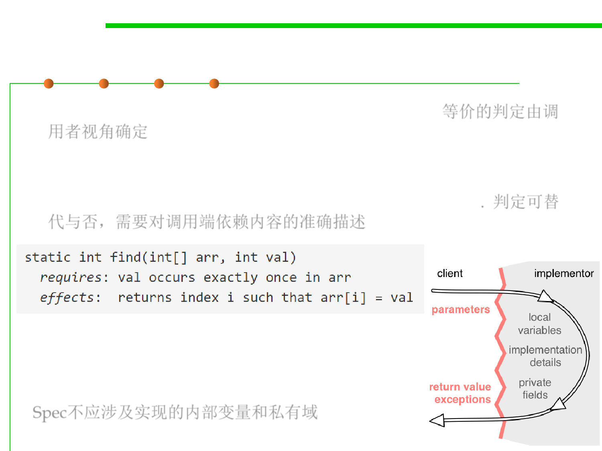

Behavioral equivalence
3.2 Designing Specification
▪ The notion of equivalence is in the eye of the client. 等价的判定由调
用者视角确定
▪ In order to make it possible to substitute one implementation for
another, and to know when this is acceptable, we need a
specification that states exactly what the client depends on. 判定可替
代与否，需要对调用端依赖内容的准确描述
▪ Note: specification should never talk
about local variables of the method
or private fields of the method’s class.
Spec不应涉及实现的内部变量和私有域